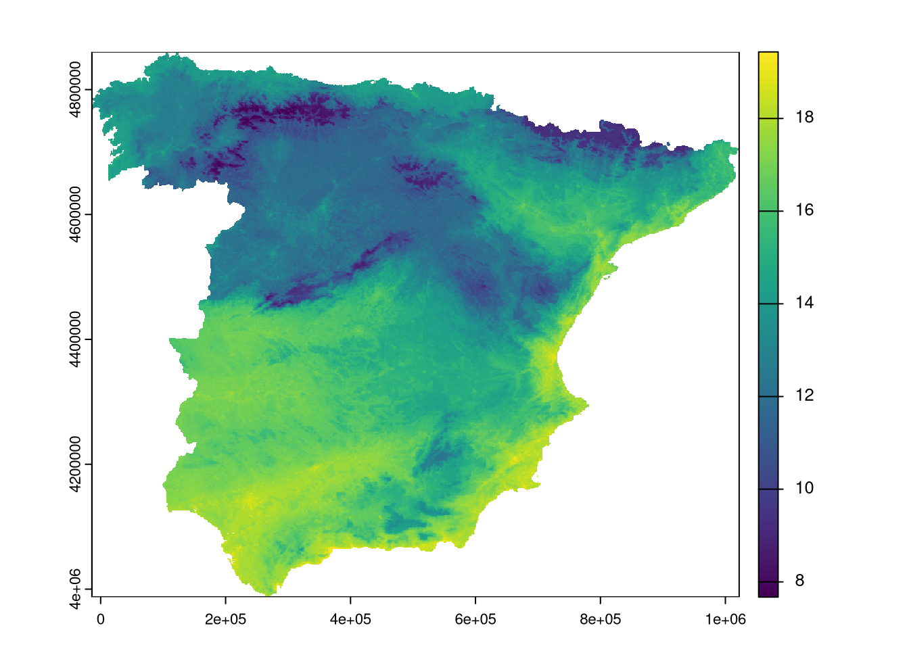
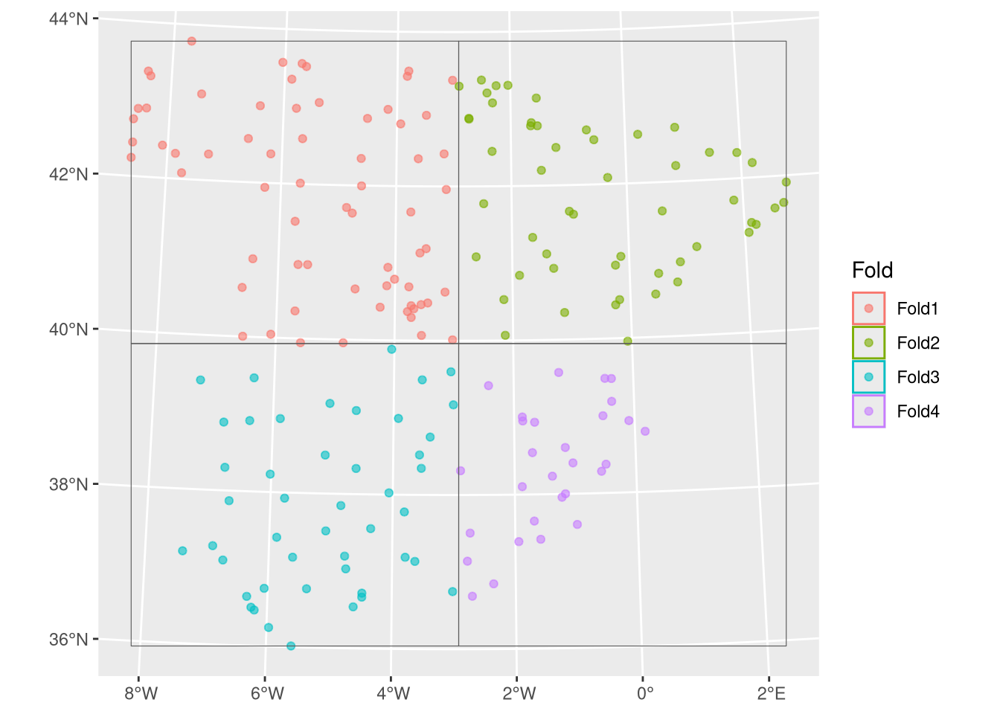
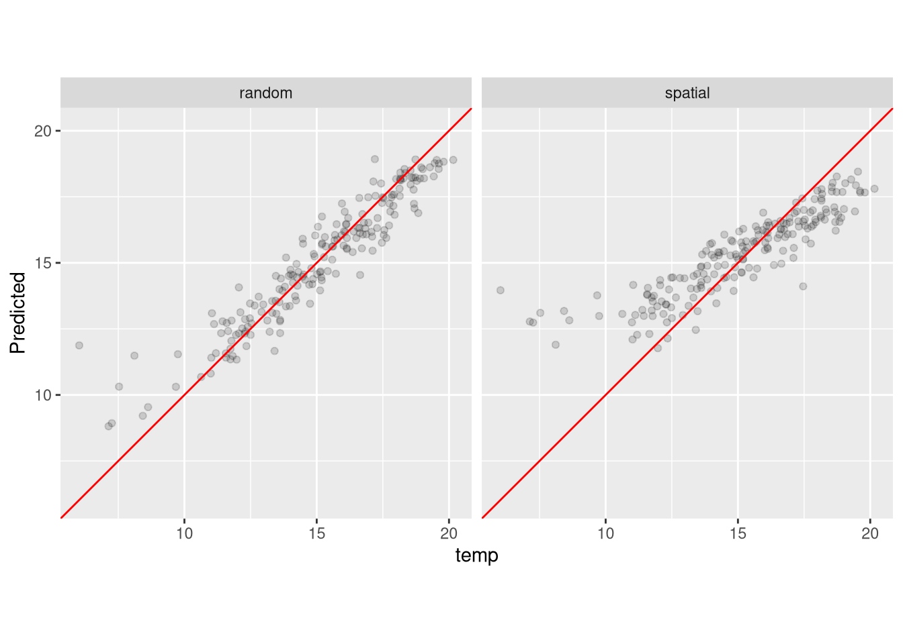
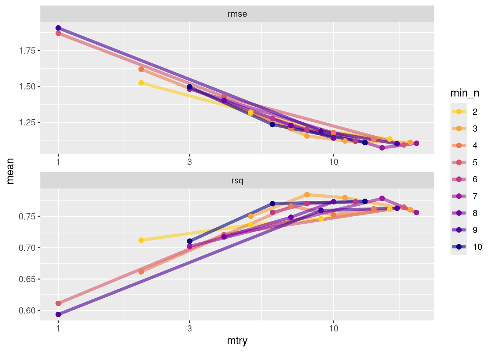
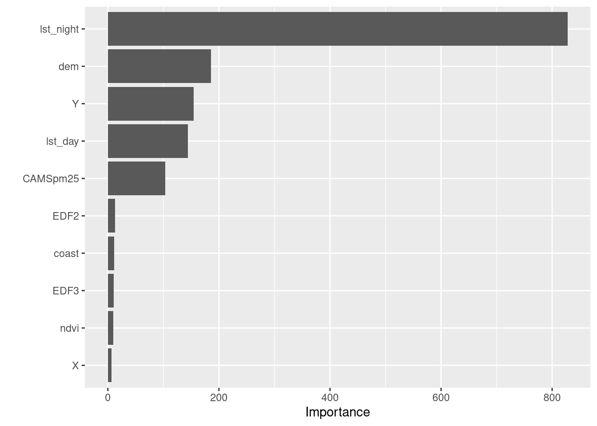
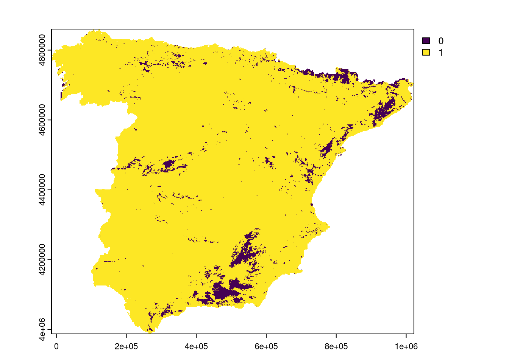

library(terra)
library(sf)
library(tidymodels)
library(ranger)
library(dplyr)
library(spatialsample)
library(waywiser)
library(vip)Spatial machine learning with the tidymodels framework
rstats
sml
Hanna Meyer ![]()
This is the third part of a blog post series on spatial machine learning with R.
You can find the list of other blog posts in this series in part one.
Introduction
In this blog post, we will show how to use the tidymodels framework for spatial machine learning. The tidymodels framework is a collection of R packages for modeling and machine learning using tidyverse principles.
Prepare data
Load the required packages:
Read data:
trainingdata <- sf::st_read("https://github.com/LOEK-RS/FOSSGIS2025-examples/raw/refs/heads/main/data/temp_train.gpkg")
predictors <- terra::rast("https://github.com/LOEK-RS/FOSSGIS2025-examples/raw/refs/heads/main/data/predictors.tif")Prepare data by extracting the training data from the raster and converting it to a sf object.
trainDat <- sf::st_as_sf(terra::extract(predictors, trainingdata, bind = TRUE))
predictor_names <- names(predictors) # Extract predictor names from the raster
response_name <- "temp"
Note
Compared to caret, no dropping of the geometries is required.
A simple model training and prediction
First, we train a random forest model. This is done by defining a recipe and a model, and then combining them into a workflow. Such a workflow can then be used to fit the model to the data.
# Define the recipe
formula <- as.formula(paste(
response_name,
"~",
paste(predictor_names, collapse = " + ")
))
recipe <- recipes::recipe(formula, data = trainDat)
rf_model <- parsnip::rand_forest(trees = 100, mode = "regression") |>
set_engine("ranger", importance = "impurity")
# Create the workflow
workflow <- workflows::workflow() |>
workflows::add_recipe(recipe) |>
workflows::add_model(rf_model)
# Fit the model
rf_fit <- parsnip::fit(workflow, data = trainDat)Now, let’s use the model for spatial prediction with terra::predict().
prediction_raster <- terra::predict(predictors, rf_fit, na.rm = TRUE)
plot(prediction_raster)
Spatial cross-validation
Cross-validation requires to specify how the data is split into folds. Here, we define a non-spatial cross-validation with rsample::vfold_cv() and a spatial cross-validation with spatialsample::spatial_block_cv().
random_folds <- rsample::vfold_cv(trainDat, v = 4)
block_folds <- spatialsample::spatial_block_cv(trainDat, v = 4, n = 2)
spatialsample::autoplot(block_folds)
# control cross-validation
keep_pred <- tune::control_resamples(save_pred = TRUE, save_workflow = TRUE)Next, we fit the model to the data using cross-validation with tune::fit_resamples().
### Cross-validation
rf_random <- tune::fit_resamples(
workflow,
resamples = random_folds,
control = keep_pred
)
rf_spatial <- tune::fit_resamples(
workflow,
resamples = block_folds,
control = keep_pred
)To compare the fitted models, we can use the tune::collect_metrics() function to get the metrics.
### get CV metrics
tune::collect_metrics(rf_random)# A tibble: 2 × 6
.metric .estimator mean n std_err .config
<chr> <chr> <dbl> <int> <dbl> <chr>
1 rmse standard 0.944 4 0.0923 Preprocessor1_Model1
2 rsq standard 0.903 4 0.0192 Preprocessor1_Model1tune::collect_metrics(rf_spatial)# A tibble: 2 × 6
.metric .estimator mean n std_err .config
<chr> <chr> <dbl> <int> <dbl> <chr>
1 rmse standard 1.41 4 0.292 Preprocessor1_Model1
2 rsq standard 0.719 4 0.0744 Preprocessor1_Model1# rf_spatial$.metrics # metrics from each foldAdditionally, we can visualize the models by extracting their predictions with tune::collect_predictions() and plotting them.

Note
Similar to caret, we first define folds and a definition of train control. The final model, however, is still stored in a separate object.
Model tuning: spatial hyperparameter tuning and variable selection
Hyperparameter tuning
Next, we tune the model hyperparameters. For this, we change the workflow to include the tuning specifications by using the tune() function inside the model definition and define a grid of hyperparameters to search over. The tuning is done with tune::tune_grid().
# mark two parameters for tuning:
rf_model <- parsnip::rand_forest(
trees = 100,
mode = "regression",
mtry = tune(),
min_n = tune()
) |>
set_engine("ranger", importance = "impurity")
workflow <- update_model(workflow, rf_model)
# define tune grid:
grid_rf <-
grid_space_filling(
mtry(range = c(1, 20)),
min_n(range = c(2, 10)),
size = 30
)
# tune:
rf_tuning <- tune_grid(
workflow,
resamples = block_folds,
grid = grid_rf,
control = keep_pred
)The results can be extracted with collect_metrics() and then visualized.
rf_tuning |>
collect_metrics()# A tibble: 60 × 8
mtry min_n .metric .estimator mean n std_err .config
<int> <int> <chr> <chr> <dbl> <int> <dbl> <chr>
1 1 5 rmse standard 1.87 4 0.297 Preprocessor1_Model01
2 1 5 rsq standard 0.611 4 0.0806 Preprocessor1_Model01
3 1 9 rmse standard 1.91 4 0.257 Preprocessor1_Model02
4 1 9 rsq standard 0.594 4 0.0930 Preprocessor1_Model02
5 2 4 rmse standard 1.62 4 0.315 Preprocessor1_Model03
6 2 4 rsq standard 0.662 4 0.0924 Preprocessor1_Model03
7 2 2 rmse standard 1.52 4 0.263 Preprocessor1_Model04
8 2 2 rsq standard 0.712 4 0.0795 Preprocessor1_Model04
9 3 7 rmse standard 1.48 4 0.292 Preprocessor1_Model05
10 3 7 rsq standard 0.702 4 0.0747 Preprocessor1_Model05
# ℹ 50 more rowsrf_tuning |>
collect_metrics() |>
mutate(min_n = factor(min_n)) |>
ggplot(aes(mtry, mean, color = min_n)) +
geom_line(linewidth = 1.5, alpha = 0.6) +
geom_point(size = 2) +
facet_wrap(~.metric, scales = "free", nrow = 2) +
scale_x_log10(labels = scales::label_number()) +
scale_color_viridis_d(option = "plasma", begin = .9, end = 0)
Finally, we can extract the best model and use it to get the variable importance and make predictions.
finalmodel <- fit_best(rf_tuning)
finalmodel══ Workflow [trained] ══════════════════════════════════════════════════════════
Preprocessor: Recipe
Model: rand_forest()
── Preprocessor ────────────────────────────────────────────────────────────────
0 Recipe Steps
── Model ───────────────────────────────────────────────────────────────────────
Ranger result
Call:
ranger::ranger(x = maybe_data_frame(x), y = y, mtry = min_cols(~15L, x), num.trees = ~100, min.node.size = min_rows(~7L, x), importance = ~"impurity", num.threads = 1, verbose = FALSE, seed = sample.int(10^5, 1))
Type: Regression
Number of trees: 100
Sample size: 195
Number of independent variables: 22
Mtry: 15
Target node size: 7
Variable importance mode: impurity
Splitrule: variance
OOB prediction error (MSE): 0.7108042
R squared (OOB): 0.9108492 imp <- extract_fit_parsnip(finalmodel) |>
vip::vip()
imp
final_pred <- terra::predict(predictors, finalmodel, na.rm = TRUE)
plot(final_pred)Area of applicability
The waywiser package provides a set of tools for assessing spatial models, including an implementation of multi-scale assessment and area of applicability. The area of applicability is a measure of how well the model (given the training data) can be applied to the prediction data. It can be calculated with the ww_area_of_applicability() function, and then predicted on the raster with terra::predict().
model_aoa <- waywiser::ww_area_of_applicability(
st_drop_geometry(trainDat[, predictor_names]),
importance = vip::vi_model(finalmodel)
)
AOA <- terra::predict(predictors, model_aoa)
plot(AOA$aoa)
More information on the waywiser package can be found in its documentation.
Summary
This blog post showed how to use the tidymodels framework for spatial machine learning. We demonstrated how to train a random forest model, perform spatial cross-validation, tune hyperparameters, and assess the area of applicability. We also showed how to visualize the results and extract variable importance.1
The tidymodels framework with its packages spatialsample and waywiser provides a powerful and flexible way to perform spatial machine learning in R. At the same time, it is a bit more complex than caret: it requires getting familiar with several packages2 and relationships between them. Thus, the decision of which framework to use depends on the specific needs and preferences of the user.
This blog post was originally written as a supplement to the poster “An Inventory of Spatial Machine Learning Packages in R” presented at the FOSSGIS 2025 conference in Muenster, Germany. The poster is available at https://doi.org/10.5281/zenodo.15088973.
Footnotes
We have not, though, covered all the features of the tidymodels framework, such as feature selection (https://stevenpawley.github.io/recipeselectors/) or model ensembling.↩︎
Including remembering their names and roles↩︎
Reuse
Citation
BibTeX citation:
@online{meyer2025,
author = {Meyer, Hanna and Nowosad, Jakub},
title = {Spatial Machine Learning with the Tidymodels Framework},
date = {2025-05-28},
url = {https://geocompx.org/post/2025/sml-bp3/},
langid = {en}
}
For attribution, please cite this work as:
Meyer, Hanna, and Jakub Nowosad. 2025. “Spatial Machine Learning
with the Tidymodels Framework.” May 28, 2025. https://geocompx.org/post/2025/sml-bp3/.